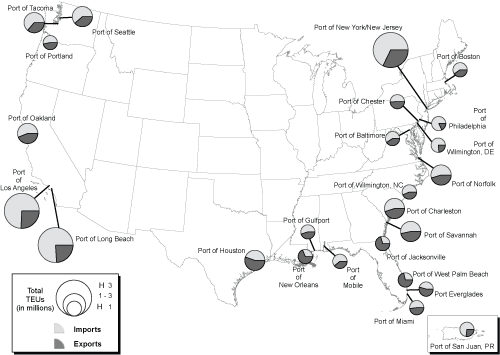

Excel | CSV | Table Version
(Thousands of TEUs)
KEY: TEUs = twenty-foot equivalent units. One 20-foot container equals one TEU, and one 40-foot container equals two TEUs.
NOTE: The data in this figure include only loaded containers in U.S. international maritime activity and cover U.S. imports, exports, and transshipments. Therefore, the trade levels will be greater than those reported from U.S. international trade statistics, which exclude transshipments. The data also exclude military shipments.
SOURCE: U.S. Department of Transportation, Research and Innovative Technology Administration, Bureau of Transportation Statistics, based on data from U.S. Department of Transportation, Maritime Administration, which are drawn from The Journal of Commerce, Port Import Export Reporting Service (PIERS), available at www.marad.dot.gov, as of March 30, 2009.